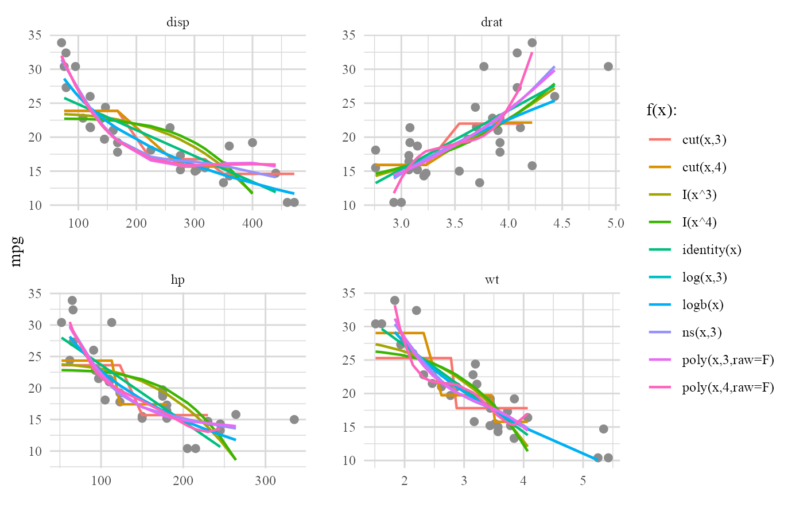
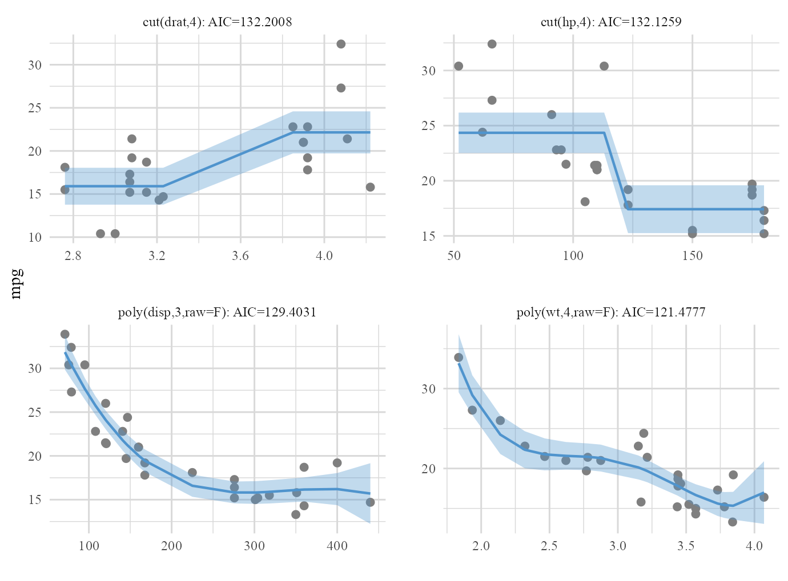
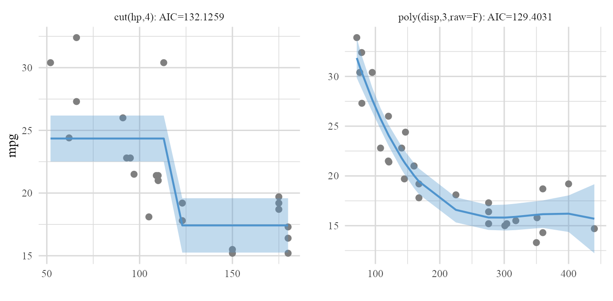
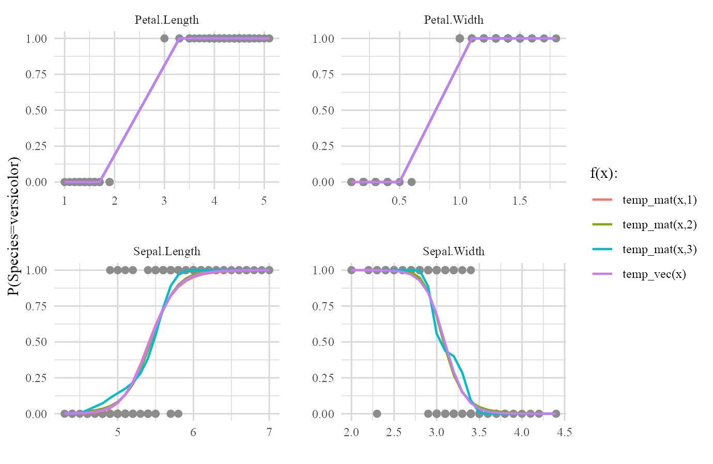
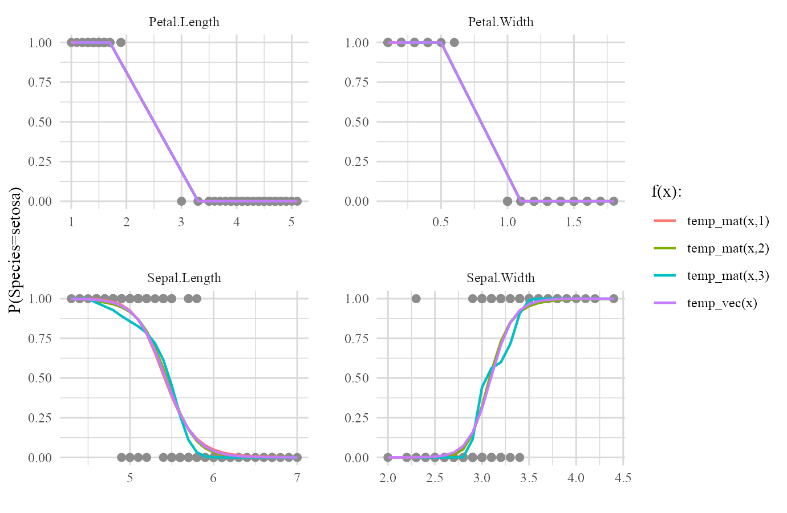
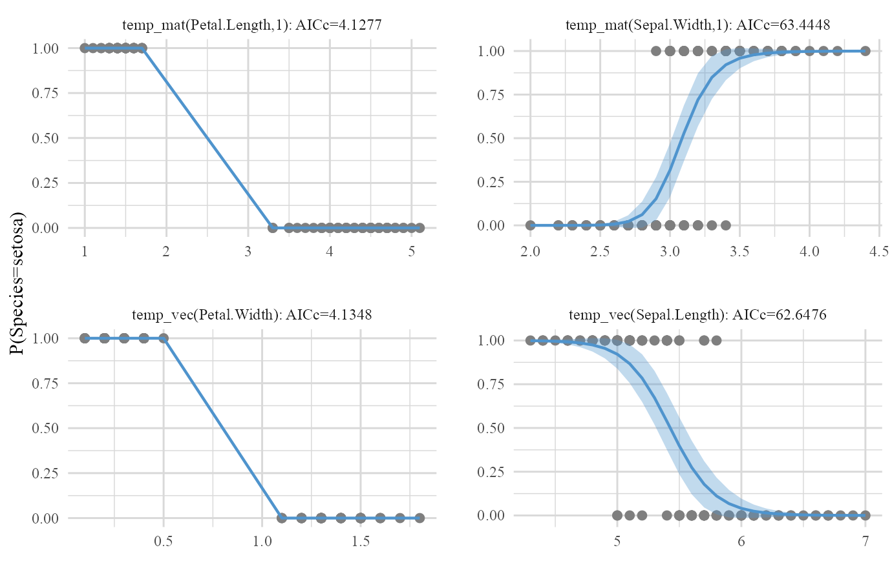

autoGAM.RmdIn this vignette, two different examples on two different well-known datasets are proposed. The goal is to cover all different aspects of workflow based procedures included this package through these examples.
Basically, autoGAM has 4 functions that communicate with each other to create a workflow with the aim of evaluating different user-specified forms of included continuous predictors and find the best Generalized Additive Model (GAM). These functions are:
1- autoGAM_frame: The base of all other procedures! Evaluates user’s specified form(s) on continuous predictor(s) and obtains the best form (among pre-specified form(s)) for each continuous predictor based on the chosen metric (AIC, AICc or BIC) values of GLM fits. This function creates the base platform for creating the final GAM adn the remaining functions are modifiers of this base platform.
Note: User can specify whether outliers should be ignored in fitting each form on predictor(s) or not. outliers in case of response are detected by car::outlierTest() which is based on studentized residuals of records and outliers in case of the predictor are determined as records that have hat-values > 2p (where p is the number of parameters inside the model). If user decides to ignore outliers in evaluation process, ignore.outliers argument can be set to TRUE but when one is not sure about the presence of outliers, it’s highly recommended to leave the default value which is FALSE to obtain more accurate results.
2- backward_select: An independent function for performing p-value based backward elimination process that also modified to simply be used on returns of class autoGAM_frame.
3- autoGAM_fit: A wrapper function that obtains and adds the final and best GAM to the platform.
4- plot: Plot method for returns of autoGAM_frame to automatically create plots of the evaluated forms of continuous predictors and plots related to the best forms of predictors.
All the mentioned procedures can be used almost back and forth but user must remember that autoGAM_frame() is the base that creates the base platform and other functions can be used on it in different orders.
library(autoGAM)
#> Loading required package: tidyverse
#> -- Attaching packages --------------------------------------- tidyverse 1.3.1 --
#> v ggplot2 3.3.3 v purrr 0.3.4
#> v tibble 3.1.2 v dplyr 1.0.6
#> v tidyr 1.1.3 v stringr 1.4.0
#> v readr 1.4.0 v forcats 0.5.1
#> -- Conflicts ------------------------------------------ tidyverse_conflicts() --
#> x dplyr::filter() masks stats::filter()
#> x dplyr::lag() masks stats::lag()
#> Loading required package: magrittr
#>
#> Attaching package: 'magrittr'
#> The following object is masked from 'package:purrr':
#>
#> set_names
#> The following object is masked from 'package:tidyr':
#>
#> extract
#> Loading required package: gam
#> Loading required package: splines
#> Loading required package: foreach
#>
#> Attaching package: 'foreach'
#> The following objects are masked from 'package:purrr':
#>
#> accumulate, when
#> Loaded gam 1.20
#> Loading required package: fastDummies
#> Loading required package: car
#> Loading required package: carData
#>
#> Attaching package: 'car'
#> The following object is masked from 'package:dplyr':
#>
#> recode
#> The following object is masked from 'package:purrr':
#>
#> someFor the first example, we use mtcars dataset. We want to evaluate x, log(x) with 1 & 3 as its base, logb(x), power(x) with degrees 3 & 4, poly(x) (polynomial form) with degrees 3 & 4, ns(x) (natural cubic spline form) with 3 degrees of freedom and cut(x) with 3 & 4 partitions as our desired forms on disp, hp, drat & wt as our chosen continuous variables and then we want to obtain the best GAM made out of the obtained best forms of mentioned continuous variables and vs as our only desired categorical variable:
my_mtcars <- mtcars %>% mutate_at('vs',as.factor)
(cars_frame <- autoGAM_frame(formula = mpg~disp+hp+drat+wt+vs,
forms = list('identity'=c(),'log'=c(1,3),'logb',
'power'=3:4,'poly'=3:4,'ns'=3,'cut'=3:4),
data = my_mtcars))
#> Warning: autoGAM removed log(disp,1), log(hp,1), log(drat,1), log(wt,1) due to
#> the inclusion of NaN, Inf or -Inf.
#>
#> Forms evaluation was done in: 1.499888 secs.
#> $`best forms`
#> [1] "poly(disp,3,raw=F)" "cut(drat,4)" "cut(hp,4)"
#> [4] "poly(wt,4,raw=F)"
#>
#> $`final predictors`
#> [1] "poly(disp,3,raw=F)" "cut(drat,4)" "cut(hp,4)"
#> [4] "poly(wt,4,raw=F)" "vs"Best forms of continuous predictors and final predictors to be used in the final GAM are the default print outputs but they are part of a bigger list. Try exploring this list by calling different parts of it by cars_frame$.
Note: As we can see, autoGAM automatically removes any function (form) that creates NaN, Inf or -Inf on specific predictors and gives out a Warning message on which forms of predictor(s) were removed.
All the included functions in the forms list has the form: f(x) or f(x,degree) and they all output a vector or a matrix (As they should!). All of these functions are well known functions from base R or familiar packages (that are included as dependencies of autoGAM) including: identity, log2, logb, log, exp, poly, bs & ns (from splines package), s (from gam package) & cut. Only power function is an exception which is a pre-defined function inside autoGAM. power(x,degree) is simply x^degree.
Note: You can always include your own function in the mentioned way if it has the f(x) or f(x,degree) form and it outputs a vector or a matrix. We will get back to this shortly in iris example.
‘identity’ (f(x)=x) and logb has the form: f(x) so we can only pass their name (like what we did for ‘logb’) or we can determine that they don’t have degree argument by passing c() in front of their names (like ‘identity’=c()), we call this singular determination. All other functions have the form: f(x,degree) and the desired degrees, degrees of freedom were passed in front of their names.
Note: If a hypothetical function g has the form g(x,degree) and you pass it singularly in the forms list (‘g’ or ‘g’=c()), default value for degree in g(x,degree) will be used, otherwise if there is no default value for degree, you will get an error until you determine degree value(s) by passing them in front of ‘g’ name in the forms list.
Now that we have our base platform and the best forms of our included continuous predictors, it’s time to fit the best GAM. it can’t be any simpler! just call autoGAM_fit() on the created frame:
(cars_fit <- autoGAM_fit(cars_frame))
#>
#> Call:
#> glm(formula = final_formula, family = family, data = data)
#>
#> Deviance Residuals:
#> Min 1Q Median 3Q Max
#> -2.68924 -1.65509 0.02335 1.04505 2.90671
#>
#> Coefficients:
#> Estimate Std. Error t value Pr(>|t|)
#> (Intercept) 22.4362 1.6734 13.407 1.81e-10 ***
#> poly(disp, 3, raw = F)1 -14.6151 11.5412 -1.266 0.2225
#> poly(disp, 3, raw = F)2 10.9831 6.9698 1.576 0.1335
#> poly(disp, 3, raw = F)3 -10.5256 4.0493 -2.599 0.0187 *
#> cut(drat, 4)(3.3,3.84] 1.1281 2.2370 0.504 0.6205
#> cut(drat, 4)(3.84,4.39] 1.1326 2.1907 0.517 0.6118
#> cut(drat, 4)(4.39,4.93] 1.3703 2.8535 0.480 0.6372
#> cut(hp, 4)(123,194] -3.5973 1.6377 -2.197 0.0422 *
#> cut(hp, 4)(194,264] -7.8049 2.9773 -2.621 0.0179 *
#> cut(hp, 4)(264,335] -6.7004 3.6635 -1.829 0.0850 .
#> poly(wt, 4, raw = F)1 1.7170 8.7863 0.195 0.8474
#> poly(wt, 4, raw = F)2 -0.4116 6.7857 -0.061 0.9523
#> poly(wt, 4, raw = F)3 -3.0134 3.4524 -0.873 0.3949
#> poly(wt, 4, raw = F)4 2.1585 2.7949 0.772 0.4505
#> vs1 -0.5373 1.6504 -0.326 0.7487
#> ---
#> Signif. codes: 0 '***' 0.001 '**' 0.01 '*' 0.05 '.' 0.1 ' ' 1
#>
#> (Dispersion parameter for gaussian family taken to be 4.617075)
#>
#> Null deviance: 1126.05 on 31 degrees of freedom
#> Residual deviance: 78.49 on 17 degrees of freedom
#> AIC: 151.52
#>
#> Number of Fisher Scoring iterations: 2Simple as that. Again this is the print output of autoGAM_fit(). Actually the fitted model object was added to the base list created by autoGAM_frame(). You can still explore everything by using cars_fit$. For example let’s extract the fitted model object that was added and we saw its summary:
cars_fit$`final fit`
#>
#> Call: glm(formula = final_formula, family = family, data = data)
#>
#> Coefficients:
#> (Intercept) poly(disp, 3, raw = F)1 poly(disp, 3, raw = F)2
#> 22.4362 -14.6151 10.9831
#> poly(disp, 3, raw = F)3 cut(drat, 4)(3.3,3.84] cut(drat, 4)(3.84,4.39]
#> -10.5256 1.1281 1.1326
#> cut(drat, 4)(4.39,4.93] cut(hp, 4)(123,194] cut(hp, 4)(194,264]
#> 1.3703 -3.5973 -7.8049
#> cut(hp, 4)(264,335] poly(wt, 4, raw = F)1 poly(wt, 4, raw = F)2
#> -6.7004 1.7170 -0.4116
#> poly(wt, 4, raw = F)3 poly(wt, 4, raw = F)4 vs1
#> -3.0134 2.1585 -0.5373
#>
#> Degrees of Freedom: 31 Total (i.e. Null); 17 Residual
#> Null Deviance: 1126
#> Residual Deviance: 78.49 AIC: 151.5As you saw, we first created the base platform and evaluated our desired forms of continuous predictors in it and then fitted the GAM by using the best forms of continuous predictors and our one categorical predictor. What if we wanted all the insignificant predictors in the last outpur gone? Again it can’t be any easier. Just call backward_select() function on the base platform then fit the final GAM by autoGAM_fit().
(cars_backward_fit <- cars_frame %>%
backward_select(backward.alpha=.1,backward.test='Rao') %>%
autoGAM_fit)
#>
#> Call:
#> glm(formula = final_formula, family = family, data = data)
#>
#> Deviance Residuals:
#> Min 1Q Median 3Q Max
#> -3.11983 -1.16499 0.05868 1.43673 2.66941
#>
#> Coefficients:
#> Estimate Std. Error t value Pr(>|t|)
#> (Intercept) 22.3680 0.7316 30.576 < 2e-16 ***
#> poly(disp, 3, raw = F)1 -16.5277 3.7439 -4.415 0.00017 ***
#> poly(disp, 3, raw = F)2 9.9757 2.2816 4.372 0.00019 ***
#> poly(disp, 3, raw = F)3 -10.7006 1.9112 -5.599 7.98e-06 ***
#> cut(hp, 4)(123,194] -2.9287 1.1174 -2.621 0.01471 *
#> cut(hp, 4)(194,264] -6.4395 1.7815 -3.615 0.00132 **
#> cut(hp, 4)(264,335] -4.9531 2.2178 -2.233 0.03471 *
#> ---
#> Signif. codes: 0 '***' 0.001 '**' 0.01 '*' 0.05 '.' 0.1 ' ' 1
#>
#> (Dispersion parameter for gaussian family taken to be 3.552615)
#>
#> Null deviance: 1126.047 on 31 degrees of freedom
#> Residual deviance: 88.815 on 25 degrees of freedom
#> AIC: 139.48
#>
#> Number of Fisher Scoring iterations: 2From the output we can see that backward elimination was done. The sequential details of this backward process were also added to the list from autoGAM_frame. let’s check it out:
cars_backward_fit$`backward info`
#> $step0
#> Df Deviance AIC scaled Rao sc. Pr(>Chi)
#> poly(disp, 3, raw = F) 3 127.11898 160.9525 10.5323626 0.01454296
#> cut(drat, 4) 3 79.87272 146.0824 0.2994191 0.96013770
#> cut(hp, 4) 3 112.58882 157.0683 7.3853130 0.06057964
#> poly(wt, 4, raw = F) 4 85.85985 146.3954 1.5961573 0.80948262
#> vs 1 78.97962 149.7226 0.1059860 0.74476113
#>
#> $`step1: removed cut(drat, 4) [Pr(>Chi) = 0.9601]`
#> Df Deviance AIC scaled Rao sc. Pr(>Chi)
#> poly(disp, 3, raw = F) 3 130.58149 155.8124 12.6973953 0.005338874
#> cut(hp, 4) 3 125.94498 154.6556 11.5364218 0.009152265
#> poly(wt, 4, raw = F) 4 88.81200 141.4772 2.2383824 0.692008743
#> vs 1 80.98379 144.5245 0.2782113 0.597876021
#>
#> $`step2: removed poly(wt, 4, raw = F) [Pr(>Chi) = 0.692]`
#> Df Deviance AIC scaled Rao sc. Pr(>Chi)
#> poly(disp, 3, raw = F) 3 359.41473 180.2118 7.312599e+01 9.134616e-16
#> cut(hp, 4) 3 136.49324 149.2293 1.288508e+01 4.891831e-03
#> vs 1 88.81537 139.4784 9.115434e-04 9.759141e-01
#>
#> $`step3: removed vs [Pr(>Chi) = 0.9759]`
#> Df Deviance AIC scaled Rao sc. Pr(>Chi)
#> poly(disp, 3, raw = F) 3 380.2083 180.0115 82.02211 1.130401e-17
#> cut(hp, 4) 3 138.4360 147.6816 13.96734 2.949949e-03Now nothing gathers up information in one place better than a good plot. plot method for autoGAM_frame was designed to create plots related to evaluation of different forms of continuous predictors and to create final forms of included continuous predictors.
Note that plot can be called on any object with the autoGAM_frame base.
plot(cars_frame,type='forms')
The plot above was a bit crowded, wasn’t it? It’s always good to see a formal plot for final best form of each continuous predictor that was included in the final GAM.
Based on full model:
plot(cars_fit,type='final')
Based on reduced model after backward elimination process:
plot(cars_backward_fit,type='final')
Now that we have the general idea about how autoGAM works, it’s time to wrap everything up by mentioning final details in the form of an example.
This time we are interested in evaluation of two completely random functions that one of them has a vector output and the other one has a matrix output.
We first perform some modifications on iris data and then we introduce our desired functions:
(my_iris <- iris %>% filter(Species %in% unique(Species)[1:2]) %>%
as_tibble %>% mutate_at('Species',as.character))
#> # A tibble: 100 x 5
#> Sepal.Length Sepal.Width Petal.Length Petal.Width Species
#> <dbl> <dbl> <dbl> <dbl> <chr>
#> 1 5.1 3.5 1.4 0.2 setosa
#> 2 4.9 3 1.4 0.2 setosa
#> 3 4.7 3.2 1.3 0.2 setosa
#> 4 4.6 3.1 1.5 0.2 setosa
#> 5 5 3.6 1.4 0.2 setosa
#> 6 5.4 3.9 1.7 0.4 setosa
#> 7 4.6 3.4 1.4 0.3 setosa
#> 8 5 3.4 1.5 0.2 setosa
#> 9 4.4 2.9 1.4 0.2 setosa
#> 10 4.9 3.1 1.5 0.1 setosa
#> # ... with 90 more rowsWe filtered iris to only have the information of setosa & versicolor Species. So our version of iris (dat) has all numerical predictors and a categorical response with 2 levels (Species).
Now we introduce our forms (functions) to be evaluated on our predictors
temp_vec <- function(x) 3*sqrt(x)+5
temp_mat <- function(x,d) as.list((1:d)*-1) %>% map(~x^.) %>% reduce(cbind)Both of these specified functions have f(x) or f(x,degree) form and their outputs are either a vector or a matrix so they can be used in the list of forms argument.
iris_fit <- autoGAM_frame(formula=Species~.,
data=my_iris,
forms=list('temp_vec','temp_mat'=1:3),
family=binomial(link='logit'),
metric='AICc',
parallel=T) %>% autoGAM_fit
#>
#> Forms evaluation was done in: 14.45891 secs.
plot(iris_fit,type='forms')
One last thing! You saw that base category of the Species variable was chosen to be setosa. This is because by default the first category of the response will become the base. There’s no difference in how the model is going to predict but one might want to change this base for the sake of interpretation. For example what if we wanted versicolor as the base category of the response? We can easily set base category of response with resp.base argument.
iris_frame <- autoGAM_frame(formula=Species~.,
data=my_iris,
forms=list('temp_vec','temp_mat'=1:3),
family=binomial(link='logit'),
metric='AICc',
parallel=T,
resp.base='versicolor')
#>
#> Forms evaluation was done in: 11.48609 secs.
plot(iris_frame,type='forms')
plot(iris_frame)
From update (1.0.0) that came with total rebuild of the package’s structure, backward_select() became an independent function so it can act as a function on autoGAM_frame objects to match the new workflow based structure. A valuable side effect of this independence is that this function can also act as an independent function for only backward selection procedures based on formula inputs. In technical form, object argument can be both a formula or an object of class autoGAM_frame to participate in autoGAM’s workflow. The usage is pretty easy and straightforward but let’s check out an example:
backward_select(object=mpg~hp+poly(disp,2)+cut(drat,3)+vs,data=my_mtcars)
#> $step0
#> Df Deviance AIC scaled dev. Pr(>Chi)
#> hp 1 177.3535 159.6092 0.05513119 0.814363717
#> poly(disp, 2) 2 274.0842 171.5385 13.98442936 0.000919009
#> cut(drat, 3) 2 222.5434 164.8724 7.31839905 0.025753119
#> vs 1 178.3336 159.7855 0.23148621 0.630424008
#>
#> $`step1: removed hp [Pr(>Chi) = 0.8144]`
#> Df Deviance AIC scaled dev. Pr(>Chi)
#> poly(disp, 2) 2 426.7211 183.7047 28.0955479 7.927373e-07
#> cut(drat, 3) 2 232.9316 164.3324 8.7232019 1.275795e-02
#> vs 1 179.1663 157.9346 0.3254306 5.683622e-01
#>
#> $`step2: removed vs [Pr(>Chi) = 0.5684]`
#> Df Deviance AIC scaled dev. Pr(>Chi)
#> poly(disp, 2) 2 678.2967 196.5352 42.600650 5.615474e-10
#> cut(drat, 3) 2 233.3932 162.3957 8.461117 1.454426e-02The detailed information of the sequential backward elimination process will be returned directly. When object is an object of class autoGAM_frame instead of a formula, the above list will be added to the final frame list as we saw earlier.